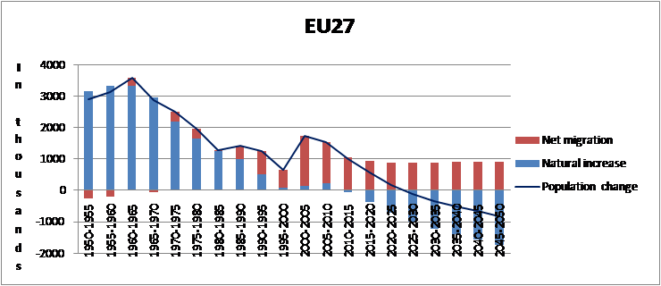
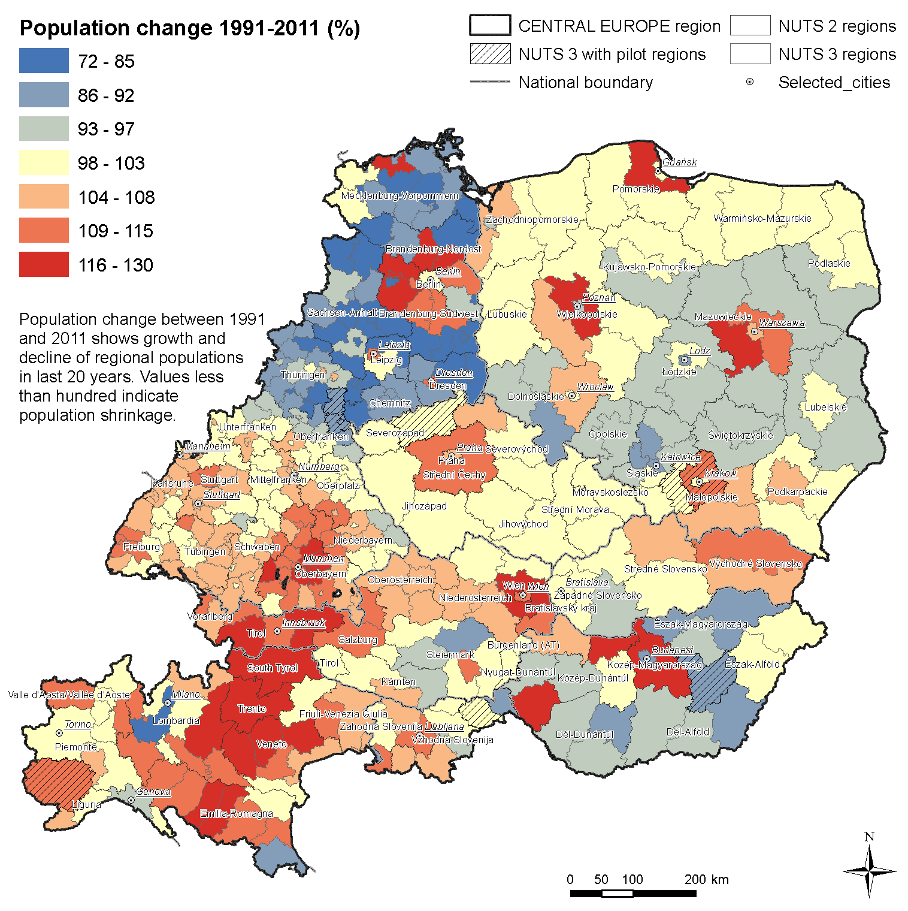
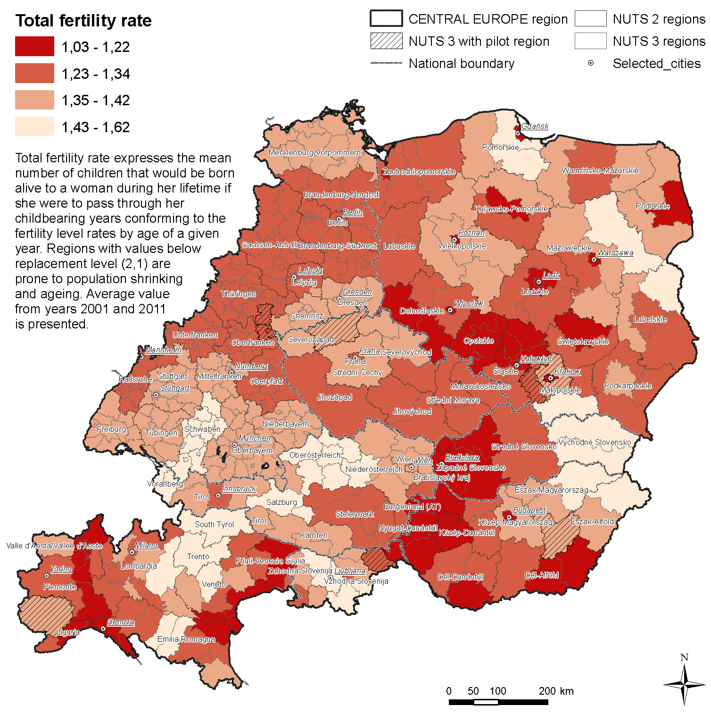
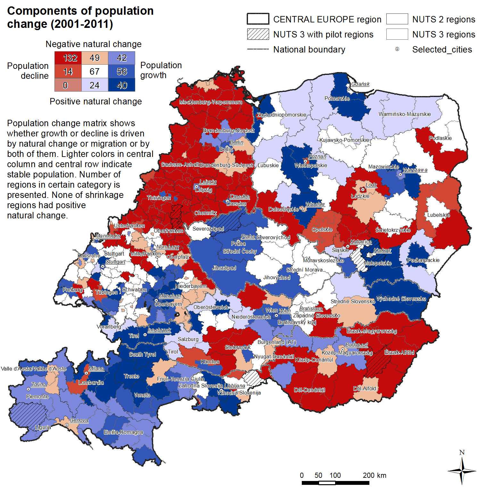
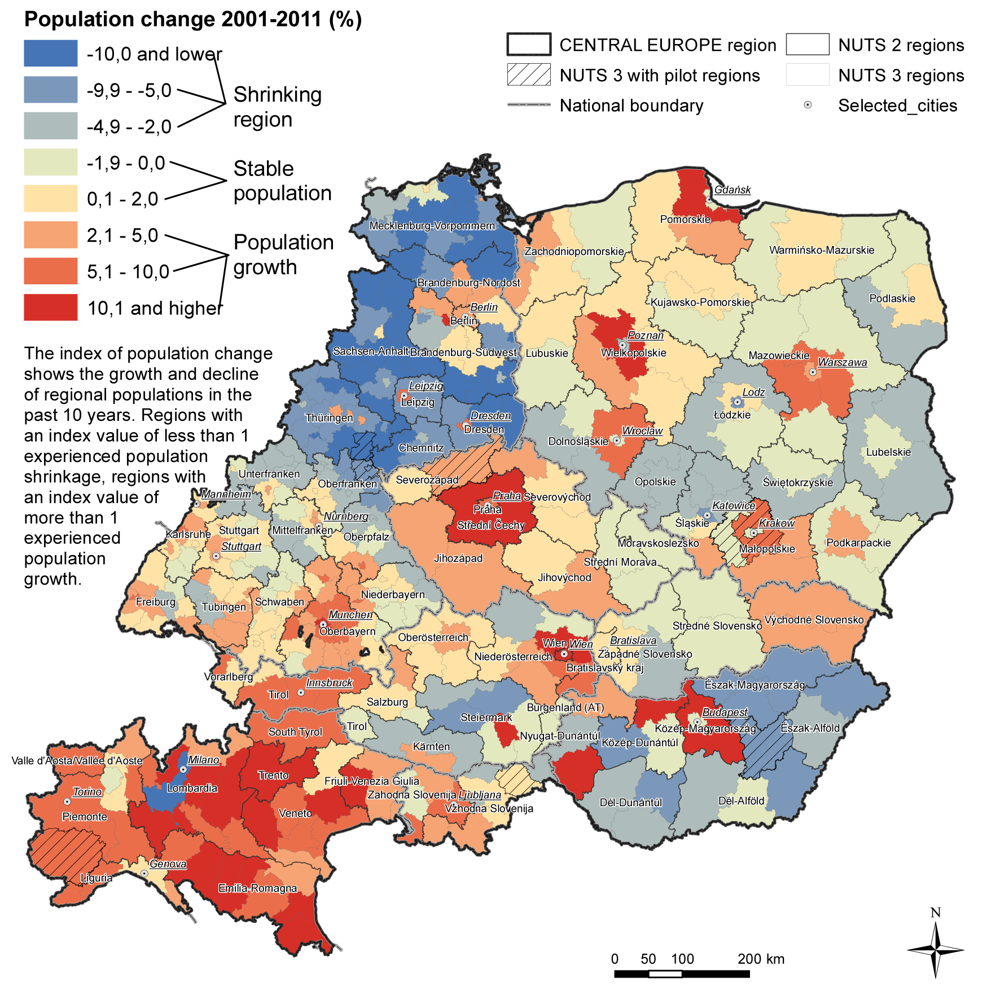
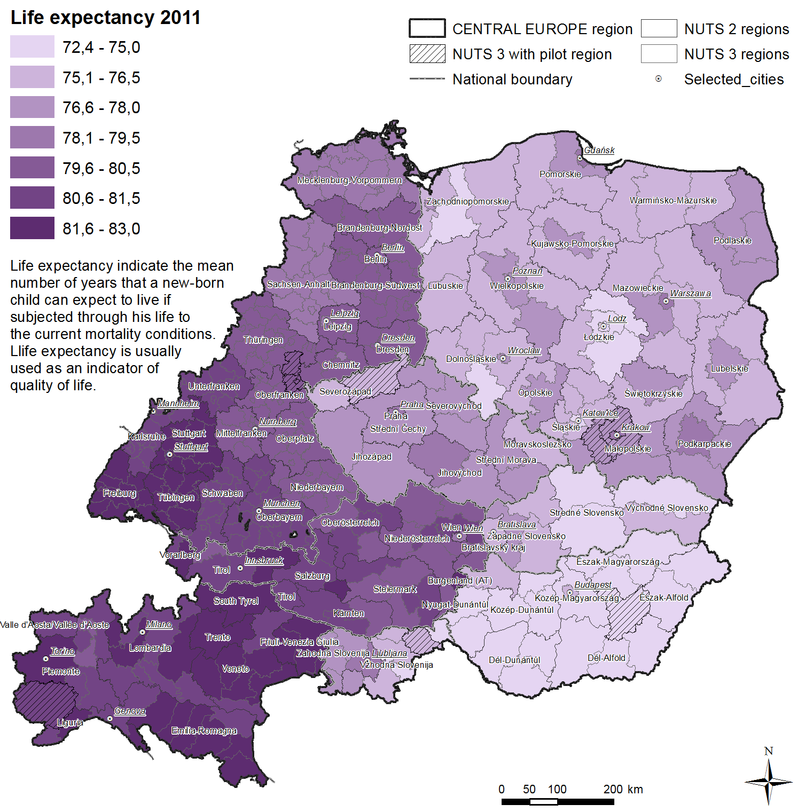
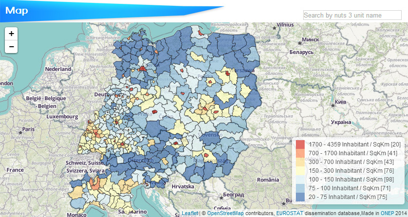

2. Trends of demographic change
2.1. Demographic trends in Europe
Today’s demographic changes – population ageing, the slowing down of population growth and the decrease in the growth rate of the working age population – are among the most serious challenges Europe will face in the upcoming decades. Shrinking regions and cities are more and more diffused across the EU, although with a ’great diversity in terms of demographic dynamics and patterns’.2 This will be a risk for European competitiveness since the increase of working age population in many other parts of the world is expected to continue. In addition, disparities across European regions may increase. Even though population ageing will affect regions all across Europe, different types of regions will be affected in different ways. In general the level of fertility and the inflow of migrants are high mostly in the more developed regions, whereas in general fertility is low and there is an outflow of young migrants in less developed regions. As a speciality of Central and South-Eastern Europe, there are also less developed regions with high fertility rate (typically small regions, especially under NUTS3 level), with a high share of minorities.
Useful terms
- Total fertility rate (TFR): The average number of children that would be born to a woman over her lifetime. It is a synthetic rate based on the age-specific fertility rates of women in their "child-bearing years" ie. 15–49.
- Replacement level fertility: The total fertility rate (TFR) that (if sustained) secures the replacement of the current population. In developed countries it is app. 2,1 children per woman.
- Tempo effect : The effect of the postponement of childbearing, which results that, fertility rates could decrease in several Member States as women step into their 30s or 40s.
- Dependency ratio: The ratio of those typically not in the labour force (the dependent part) and those typically in the labour force (the productive part). It is used to measure the pressure on productive population.
- Old-age dependency ratio: The ratio measures the number of elderly people (above 65 years) as a share of those of working age (aged 15-64). As the ratio increases there may be an increased burden on the productive part of the population to maintain the pensions and other costs of the elderly.
2.1.1. General European tendencies
The population of the European Union has been growing and ageing steadily in the past decades. In 2010 the total population of the European Union crossed the 500 million threshold. The fertility rate of the European Union is 1,6 (2009) which is far below the replacement level. In addition to the pro-population policies that aim to increase reproductivity, there are two factors that can mitigate the effects of low fertility levels, and thus postpone the population decrease of the European Union: the first is increasing life expectancy and the second is migration from countries outside the EU.
Figure 1. The composition of population change in the EU
{kind=link}
Source: United Nations 2008
Looking at the dynamics of demographic change since the year 2000, there is clear evidence for both processes of population growth and ageing in the European Union. In a time span of almost 10 years, the share of the 0-14 age group has diminished significantly, while the share of the elderly – especially of those above age 80 - has grown considerably. These trends show the fact that the modest population growth of the European Union derives to a greater extent from the high level of migration than from natural population change. Although the level of net migration has varied significantly over the last ten years, it was the source of at least two-thirds of the positive population change.
The population of the EU will become significantly older in the next decades, no matter whether the current low fertility rate increases to the replacement level or whether migration from third countries can counterbalance the natural decrease. Currently the elderly (above 65) make up 17 per cent among the EU’s inhabitants. The increasing number of the elderly in the population is a consequence of longer life expectancy which is definitely a positive phenomenon and characterises the increasing quality of life in the European Union. On the other hand, the old-age dependency ratio is currently 25 per cent and it may increase to 50 per cent by 2050, which would definitely put pressure on public spending (first and foremost pensions, health care and social services). Ageing and its fiscal and social consequences – summarised in Chapter 2 [link] – affect all the EU countries (though to varying extent).
2.1.2. Demographic imbalances
Generally speaking the peripheral and sparsely populated areas loose population, while metropolitan regions and regional centres are still attractive. Europe as a whole is more or less involved in a depopulation process, however during the end of 1990s 60% of the regions experienced population increase, both by natural population growth and positive net-migration. In the 2000s the percentage of regions experiencing population decline has increased to 30 per cent, and the percentage of regions with a high percentage of people aged 65 or over has increased as well. Population growth is unevenly distributed across Europe: between 2000-2008 seven countries of the EU reported population decrease: three Baltic states, Bulgaria, Romania, Hungary, Poland, and Germany.
Natural growth is negative or stagnating in more than one half (16) of the EU countries since 2000, Ireland was the only exception, where natural growth exceeded 0.5 per cent of the total population per year. A number of regions in all Member States experience a constant decrease of population at a restrained pace, but the fast rate of emigration together with a dropping fertility rate is typical to most new Member States and the eastern part of Germany. Since 2000 four countries have reported both negative natural growth and negative net migration: Bulgaria, Latvia, Lithuania and Romania. In four other countries negative natural growth has been compensated for by positive net migration: Germany, Czech Republic, Italy and Slovenia. In two countries net migration was not enough to counterbalance negative natural growth: Estonia and Hungary.
2.1.3. Natural population change
From the 1960s Total Fertility Rates (TFR) have declined in every part of Europe and now it is is far below the replacement level (2.1), however in most Member States the fertility rate has increased lately (except for Germany and Portugal) most probable because of the tempo effect: women who shifted their childbearing to their 30s or 40s begin to have their children. The fertility rate differs significantly from country to country (ranging from 1.31 in Latvia to 2.07 in Ireland in 2009). Countries with extremely low fertility rates were Spain, Italy, Bulgaria, Slovenia, Hungary, Czech Republic, Estonia and Latvia, however there are quite big regional differences.
There are many theories concerning why the differences in fertility levels exist over Europe. Many focus on the characteristics of the family, gender relations, religion, the possible role of family policies and the possibility of entry in the labour market. Other theories connect it to different welfare state models. The question of culture is also used to explain the differences with regard to fertility among the members of the European Union between East and West, North and South.
2.1.4. Ageing, increase in life expectancy
Ageing is strongly connected to the growing life expectancy of the European population. According to the Demography Report (2010), the average life expectancy in the countries of the EU27 in 2009 was 82.4 years for women and 76.4 years for men.This is the result of a steady increase gained by reducing mortality, made primarily by advancement in healthcare. There is, however, still a significant East-West divide in the EU, a divide that particularly concerns men, who can expect to live only to around 65-70 years in eight of the Central and East European Member States, compared to an EU-15 average of more than 76 years. In these countries, mortality among middle-aged men remains high, and this is the main factor behind the large East-West gap in life expectancy. In the Baltic states women live 11 years longer than men, whereas in many western and northern countries the difference is below 5 years.3
The percentage of people aged 65 or over is high in several northern regions (mainly in Sweden), in central regions (mainly in Germany) and in southern regions (in Italy and Spain). The rate of ageing is relatively low in Poland, Ireland and Iceland. Since 2000 the number of oldest old (persons over 75) has risen in almost every European regions, without any specific geographical concentration.
As a result, the old-age dependency ratio, calculated as the ratio of people aged 65 or above relative to the working-age population aged 15-64, is projected to more than double in the EU from 25 per cent to 50 per cent in 2050. The increase is particularly high in Germany, where the working age population has decreased by 3 per cent since 2000, while the number of elderly (65+) increased by 22 per cent. Greece and Italy have experienced a strong increase in the old age dependency ratio as well, but in these countries the working age population has not yet declined.
This means that the EU would move from having 4 persons of working-age for every person aged over 65 to a ratio of only 2 to 1. When adding the number of children to the calculation, the ratio of dependent to active is projected to rise by nearly 30 percentage points. These population trends underpin future trends in the labour market which are of crucial importance for economic growth. An indicator of the challenges ahead is the ratio of non-workers to workers, or the economic dependency ratio.
As has been stressed in ’Recent demographic developments in Europe’ by the Council of Europe (2002) the European population structure no longer resembles the shape of a pyramid, but rather a snowball. The youngest generations under the age of 20 years have become smaller and smaller. They constitute the smaller future generations of parents, which again leads to a smaller number of births. So the European population structure, which is already older than most of the countries in the world, shows the characteristic features of further ageing.
Review questions
- Approximately how many people live in the EU today?
- What are the main factors affecting population change in a region/country?
- How much is the TFR for the EU, and what does it mean?
- Which countries have low birth rates in the EU?
- Why does the share of the elderly in the population increase? Which processes have an impact on it?
- How do we measure the share of the active age groups to the elderly? What is term used for such a measurement?
- Why does the increase of the share of the elderly cause problems?
- Why does the decrease of young people cause problems?
Orienting questions for adapting this training materials to local/national circumstances
Which are the typical demographic processes in your country?
- How many people live there?
- Is there a growing or a shrinking population? Is there natural growth or natural decrease? Is the migration balance positive or negative?
- How many children are born in your country per year? How much is the Total Fertility Rate in your country?
- What is the expected life span of men and women in your country currently? What was the expected life span 20 years ago? (Life expectancy at birth)
- What is the share of the elderly (above 65) in the population in your country?
- Are there any regional imbalances in this question? Are there any regions with a different demographic situation?
- Do you have any policies concerning demographic changes and their impacts at the national level? If you have, what are their main aims to tackle demographic changes and their impacts?
If you are not an expert in the above mentioned topics, please visit the website of your national statistical office or the webpage of the EUROSTAT to access the up-to-date information. Eurostat data can be accessed at:
http://epp.eurostat.ec.europa.eu/portal/page/portal/population/data/main_tables
2.2. Demographic trends in Central Europe4
2.2.1.General tendencies in Central European countries
Today’s demographic changes – population ageing, the slowing down of population growth and the decrease in the growth rate of the working age population – are among the most serious challenges Europe will face in the upcoming decades. Shrinking regions and cities are more and more diffused across the EU, although with a ’great diversity in terms of demographic dynamics and patterns’. This may be a risk for European competitiveness since the increase of working age population in many other parts of the world is expected to continue. In addition, disparities across European regions may increase. Even though population ageing will affect regions all across Europe, different types of regions will be affected in different ways. In general the higher level of fertility and the greater inflow of migrants characterise mostly the more developed regions, whereas in general fertility is low and there is an outflow of young migrants in less developed regions. As a speciality of Central and South-Eastern Europe, there are also less developed regions with high fertility rate (typically small regions, especially under NUTS3 level), with a high share of minorities.
Key demographic processes and challenges in the Central European countries
| Austria |
|
| Czechia |
|
| Germany |
|
| Hungary |
|
| Italy |
|
| Poland |
|
| Slovakia |
|
| Slovenia |
|
Source: Demography report 2010, SEB Report authors’ analysis of scientific literature
2.2.2. Indicators of shrinking
What is a shrinking region?
The concept of ‘shrinking region’ is a recent one, even if the phenomenon is known for a long time. What is essentially new is that depopulation affects entire regions, including urban areas (‘shrinking cities’). The accurate definition of the concept is still subject of debate. Even if the phenomenon of population decline is often linked to ageing, and certain unfavourable economic and social changes, it is preferable to stand by the simplest definition, which is the reduction in the number of inhabitants of a particular region during a longer time period. In the framework of the ADAPT2DC project population shrinkage is defined as the relative decline in the total population size in a NUTS3 region in a ten-year period.
In line with the definition used by the ADAPT2DC project, the following sub-chapter deals with the demographic aspects of shrinkage (demographic indicators related to population shrinkage: population change, total fertility rate, and components of population change related to shrinking regions and cities).
Population change
If we compare the population change between 1991 and 2011 with the population change between 2001 and 2011 we can see that the macro-regional pattern of population growth and shrinkage is relatively stable. At the regional level population decline has advanced mostly in East German, Polish, and Hungarian regions. Population decline occurred in all types of regions – in rural, mixed, and urban regions. At the macro level, there is a belt of growing population regions from the Italian north through Austria to south Germany. These regions rank among regions with a higher GDP per capita and higher disposable income in comparison with other Central European regions. In Poland, Czech Republic,, Slovenia and Hungary the regions surrounding national and bigger regional urban cores are growing, whereas the urban cores themeselves might be experiencing population decline. In Slovakia there are growing regions in north and east due to younger population structures and higher levels of fertility.5
Population development in Central Europe 1991-2011
{kind=link}
Total fertility rate
The values of the total fertility rate show serious risks for future population development, as all the regions in Central Europe have a fertility level below that required for natural population replacement. The map of total fertility rate provides a rather pessimistic picture of contemporary and future population development in Central Europe. The regional differences in total fertility rate reflect differences in demographic behaviour. In principle, urban regions tend to have lower fertility levels whereas rural regions tend to have higher fertility levels, but the current situation in Central Europe shows a more complex pattern. The slight increase in the total fertility rate observed in recent years may, in part, be attributed to a catch-up process following on the general pattern of postponing having children (’tempo effect’). The highest mean age of women at childbirth is in Italy (31.4), Germany (30.4) and in Slovenia (30.1).
Total fertility rate in Central Europe in 2011
{kind=link}
Components of population change
Population change is in particular related to two factors: natural population change (births versus deaths) and net migration (immigration versus emigration). Observing the components of population change we can find more shrinking regions due to both natural change and migration than growing regions due to both natural change and migration. There are also about 40 regions that have population growth despite negative natural change, but there are no shrinking regions that have positive values of natural change. In a large number of Italian regions despite their negative natural change experienced population growth due to migration from other parts of the country and from abroad. A similar situation is observed in the north-western regions of Hungary and the metropolitan hinterland of Berlin. Shrinking regions where natural change is also negative cover most of the eastern German and Hungarian regions; a large share of non-metropolitan regions in Poland, middle-south Austria and south-west Slovakia.
Although migration flows are difficult to predict at the national and as well as regional level, from scientific literature we know that the majority of migration movements are motivated by economic factors. Within the borders of the EU after the access of many former socialist countries in 2004 and 2007 employment-related migration with an emphasis on skilled workers from the new member states to the western countries became the main type of movement, because of huge income differences. In the 1990s, Germany and Austria were the main target countries, after 2000, the Southern European countries (Italy, Spain, Portugal, Greece), Britain and Ireland became major destinations.As an impact of the economic crisis this process stopped or reversed and there has been an intensive migration from the southern countries to the North. This type of migration usually involves active age groups, thus can counterbalances ageing and shrinking in economically attractive cities and regions. On the other hand it worsens the situation of source countries, not only in demographic terms. It is important to point out that in ageing and shrinking societies there is a growing share of people outside the labour force who migrate for other than economic reasons (retirement migration, amenity migration, etc.).
Natural change and migration as components of population change in Central Europe 2001-2011
{kind=link}
Shrinking regions
At the Central European level there is a concentrated macro-regional space of population growth from northern Italy, to western Austria, to southern Germany. National metropolises and several second-ratier metropolitan areas also show population growth. The remaining non-metropolitan areas not mentioned in the previous two categories have a stable population or are experiencing population shrinkage. This interpretation of population development is considered to be a broad generalisation to which there are several exceptions. Firstly, the cores of some metropolitan regions are experiencing population shrinkage (Milano, Budapest, Lodz) because there is a trend towards metropolisation and population de-concentration from urban cores to wider metropolitan areas. This trend is not uniform in all the countries in Central Europe. In eastern Germany, cities like Leipzig and Dresden are growing, whereas their hinterlands are shrinking. Secondly, as employment centres metropolitan regions compete for labour force not only with other regions in the country but also with other metropolitan regions. Therefore, smaller metropolitan regions or economically less successful metropolitan regions may also experience population decline. Prime examples of this development are former industrial and mining cities located in Poland and Czechia. Thirdly, not all rural regions show similar population development. The fate of rural areas is different fortunes because of their inherited infrastructure and their demographic structure (e.g. see the population growth in east Slovakia or the relatively high fertility in some rural areas of Northeastern Hungary). Contemporary population developments are shaped, among other things, by the changing economy, the environmental qualities of regions and accessibility to metropolitan areas. But, in principle, sparsely populated rural areas are more vulnerable to population shrinking because of their lower population density than urban and metropolitan regions.
Shrinking regions in Central Europe in 2001-2011
{kind=link}
2.2.3. Ageing
Ageing means a growing proportion of elderly age groups in the total population. One of the widespread indicators of ageing is mean age. A higher mean age may be due to the ageing of the population in place, but may also be due to selective out-migration of the younger population. Not only the level of ageing but also the pace of ageing is crucial for analysis of population development.
Population ageing is a widespread phenomenon in Central Europe. The pace of ageing is fast in almost all the regions in Central Europe. The differences between countries and regions are small and a convergence in terms of the level of ageing is to be expected. This also means that regions which currently have a younger population will be experiencing faster population ageing in the next few decades. The only exceptions to this pattern are regions with long-term migration gains (e.g. northern Italy) and metropolitan regions of European importance.
At the country level there are three basic types:
- the first group consists of Poland, Czechia and Slovakia which have fewer experiences with population ageing and their population age structures do not have a high number of elderly people.
- In the second group are Austria, Slovenia and Hungary, which can be characterised as medium-aged societies. Their mean age is higher and they also have bigger differences between younger and older regions.
- Italy and Germany have older populations and they have some regions with very old populations (the mean age is higher than 45 years; e.g. Savona, Genoa, and Alessandria in Italy, or the majority of regions in former East Germany). Whereas in north Italy and in south Germany the high values of the mean age are the result of long-term ageing processes the situation in former East Germany is caused by the extremely high out-migration of the working-age population in the 90´s. Clear spatial division between former East and West Germany is more or less blurred and the pace of ageing is similar in Chemnitz Region, Thüringen, Unterfranken, Oberfranken or Oberpfalz. At the country level there is a slower pace of ageing in northern Italy, which is the result of the positive net migration of working-age populations.
At the regional level there are several noteworthy differences within countries. The effect of ageing is lower in the metropolitan regions of national capitals and in some other second tier metropolitan regions (e.g. Stuttgart, Innsbruck) due to their attractiveness for the younger labour force and for migrants. Polish, Czech, and Hungarian urban regions tend to be older than their surrounding regions due to the residential decentralisation of younger generations from cities to their hinterland. The metropolitan hinterland in such regions tends therefore to be relatively younger than in non-metropolitan areas. A similar situation is in Slovenia, where central regions close to Ljubljana also tend to have younger populations. The situation in Germany is different. In the eastern part the cities are relatively younger than the rural areas around them, but they are still relatively old compared to the Central European average. In the western part of Germany there is a more complex patchwork of younger and older regions. In general, urban and more peripheral regions tend to be older than average. In Austria mountain regions and rural regions have younger populations; only Steiermark, with exception of Graz Region and peripheral Burgenland, have older populations.
Death rates
The rate of deaths is most commonly measured by the crude death rate, that is, the number of deaths per year per 1000 residents.
The regional differences in crude death rate largely reflect the age structure of certain regions. There is one special exception concerning former socialist countries and especially Hungary which warrants explanation. In former socialist countries there was `excess male mortality’. It is known from genetics and demography that the average length of life of males and females differs – females live on average a few years more. In former socialist countries this difference between males and females was much larger than in other developed countries. Hungary was one of the countries with a very high excess male mortality and this pattern is still visible in the contemporary crude death rate. The higher male mortality in former socialist countries is usually explained as being the result of unhealthy lifestyle habits and bad socio-economic and working conditions.
Life expectancy
Life expectancy at birth is a synthetic indicator of quality of life which reflects past and current living conditions (the nature of jobs, quality of healthcare, economic and environmental conditions, etc.) and habits (consumption and eating habits, lifestyle, social conditions, etc.). From a demographic perspective a higher life expectancy means a longer period of healthy active life but also a longer period of life with a need for health-care services.
The difference between the highest and the lowest life expectancy on a regional basis is ten years. At the country level there is a clear division between former western and eastern countries. In western countries (Germany, Austria, Italy) the level of life expectancy is very high with small regional differences. In eastern countries (Poland, Czechia, Slovakia, Hungary, Slovenia) the level of life expectancy is lower, with significant regional differences.
{kind=link}
In general, urban regions tend to have higher levels of life expectancy (e.g. Prague, Budapest, Krakow, Gdansk, Ljubljana), but there are several exceptions with a lower level of life expectancy covering regions with heavy industry or mining (Severozápad and Moravskoslezko in Czechia, Slaskie and Lodskie in Poland, Stredné a Východné Slovensko). Higher levels of life expectancy are also found in some traditionally rural regions (Podlaskie, Podkarpackie in Poland, and Vysočina in Czechia). In Slovenia higher levels of life expectancy are in urban regions, whereas lower levels of life expectancy are in remote rural areas. In Hungary life expectancy is generally low in all regions.
2.2.4. Old-age dependency and young-age-dependency ratios
Countries with a younger population and lower life expectancy such as Poland and Slovakia have a low old-age-dependency ratio. Slovenia, Czechia and Hungary have a medium old-age-dependency ratio, but as in the two previous countries it is expected that the value of the old-age-dependency indicator will rise in the next decade. The highest levels of the old-age-dependency ratio are in the East part of Germany. In general, the differences in the old-age-dependency ratio between regions in Central Europe are high. In the youngest regions there are one or two post-productive persons (aged 65 and over) to ten people of working age (aged 20 to 65) whereas in the oldest regions there are three or four postproductive persons to ten people of working age. Whereas the border between former Eastern and Western Europe was clearly visible in the old-age-dependency map, in the map of the young-age-dependency ratio it is not that clear. The average ratio of young people (aged less than 20 years) to the working-age population (aged 20 to 65) in regions is around 30 to 35 per cent.
Review questions
- What have you learnt about ’shrinking regions’? What are the typical accompainment processes of population shrinkage?
- How do we measure population ageing?
- Where do we find the most rapidly shrinking regions in CE?
- Which are the regions with the oldest population in CE?
Orienting questions
- How many people live there?
- Is there a growing or a shrinking population? Is there natural growth or natural decrease? Is the migration balance positive or negative?
- How many people live there?
- Is there a growing or a shrinking population? Is there natural growth or natural decrease? Is the migration balance positive or negative?
- How many children are born in your region per year? How much is the Total Fertility Rate in your country?
- What is the share of the elderly (above 65) in the population in your region?
- Are there any differences within your region in this question? Are there any territorial units with a different demographic character?
- Do you have any policies concerning demographic changes and their impacts at the regional level? If you have, what are their main aims to tackle demographic changes and their impacts?
For specific demographic information on your NUTS3 region, please use the interactive map included in the next sub-chapter!
2.3. Find your region6
Limits of comparability – useful to know about the NUTS 3 regions in Central Europe
For the Central European area the unit of analysis were NUTS 3 regions as defined by Eurostat (2006 version). As a result of the historical development of NUTS 3 regions there are notable differences in the average size of the area of a region between countries. Poland, Czechia, Slovakia and Hungary have relatively larger NUTS 3 regions which tend to have a more or less similar population size. Therefore a typical NUTS 3 region in these countries includes one or more regionally important cities and its surrounding rural hinterland. Slovenia, Austria and Italy have medium-sized regions. In Austria and Slovenia only regions which include big cities have a bigger population size. All the federal states in Germany have relatively small NUTS 3 regions. Whereas in other countries a regional city and its hinterland together usually form one NUTS 3 region, in Germany the regional city is usually one NUTS 3 region and the hinterland of a regional city is usually another one. In addition, the demographic situation in a region at the NUTS 3 level might not be characteristic for the whole area of a particular NUTS 3 region. The different demographic changes and geographic processes altering the spatial distribution of the population may be going on at the same time. Therefore, for the correct interpretation of demographic development at the NUTS 3 level it is necessary to supplement the data presented with scholarly literature dealing with population geography or spatial demography in particular countries or regions.